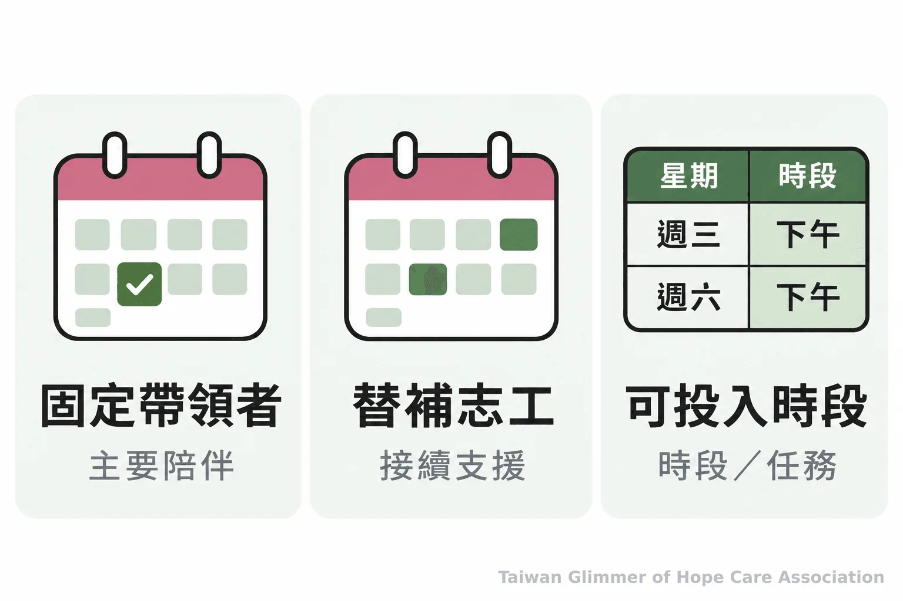
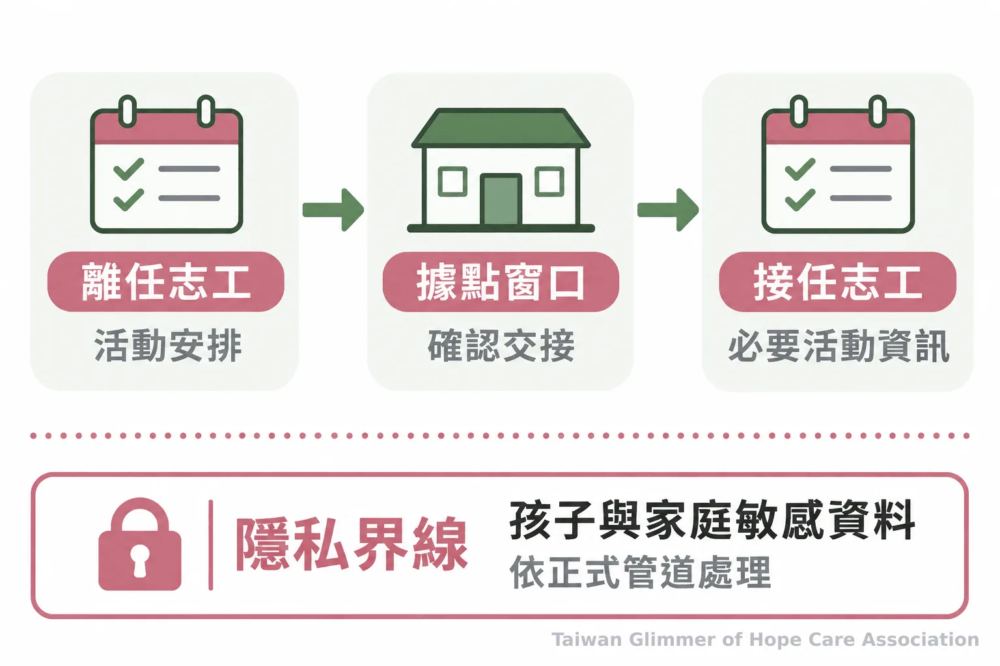

志工如何做到長期陪伴？固定班表與清楚交接
兒少據點如何減少陪伴中斷？從固定帶領者、替補排班、承諾與交接，整理讓孩子知道下次可以找誰的做法。
據點活動時間固定，帶領者卻時常更換，孩子下次來時，會遇見熟悉的大人嗎？對老師、志工與教會同工來說，長期陪伴不必先從很大的承諾開始；先讓活動安排和成人分工清楚，孩子就比較知道接下來會發生什麼、需要時可以找誰。
陪伴團隊可以從班表和交接做起。若想了解社區據點如何安排空間與安全，也可參考兒少據點的活動與安全規劃。
為什麼固定出現，能讓陪伴更可預期？
固定出現讓孩子較容易熟悉活動節奏，也較知道能向哪位成人求助。穩定的支持關係是支持環境的一部分，不能保證每個孩子有相同反應。
孩子對陌生環境或成人更替的反應各不相同，陪伴者不必替孩子推測感受，也不因沉默或拒絕參與就自行判斷原因。活動時間相近、安排由熟悉的大人說明，能讓孩子較掌握當下。
Holt、Buckley 與 Whelan 回顧兒少目睹家庭暴力的相關文獻，指出與關懷成人保持強關係及依附，可能是緩衝影響的保護因子之一；作者也提醒，兒少的經驗與發展結果並非沿著單一路徑形成。這項回顧談的是整體關係脈絡，不能直接推論某種志工排班可以治療創傷。志工可把依附概念理解為持續、回應孩子需要的照顧關係，不替孩子貼標籤。
Holt、Buckley 與 Whelan 的文獻回顧將「與關懷成人保持強關係」列為可能的保護因子之一，同時指出兒少的經驗和發展結果各有差異。
志工排班怎麼安排，才能減少突然中斷？
先確認固定的核心帶領者，再安排知道如何接手的替補人員；排班由團隊一起承擔，避免長期責任落在單一志工身上。
排班表寫明主要帶領者、替補人選與聯絡窗口。替補事前了解集合時間、活動流程和材料位置，臨時有人請假時，團隊就知道誰承接、誰通知孩子與家庭。固定不等於每次所有人都到齊，而是變動時有人接手。
志工按實際能投入的時間答應任務。若只能每月出席一次，就說明可支援的日期；若近期無法固定出席，可先承擔短期或範圍明確的工作。把能做到的班次排穩，團隊較容易安排接續。

帶領者更換時，如何把關係接續下去？
由熟悉的成人提早說明當天由誰接手，交接只傳遞活動所需資訊，並尊重孩子與家庭的隱私。
若能預知異動，可在活動前告知：「這次由另一位老師帶活動，原本的安排會由團隊接續。」臨時變動時，說清楚當天由誰帶領及已確認的下次安排。成人不必交代私人原因，也不要求孩子安慰離開的志工；尚未確認的後續不要先承諾。
交接內容以活動流程、材料、聯絡方式和完成當天工作所需的資訊為主。若涉及兒少保護疑慮，志工不自行調查、診斷或承諾保密，也不在群組散播孩子的個人資料；應依正式管道尋求協助。關於不同角色的工作界線，可延伸閱讀公部門、民間團體與志工的兒少陪伴分工。

在微光的據點，固定課程如何落實陪伴？
台灣微光希望關懷協會與在地單位合作，每個據點每月安排一堂藝術陪伴課，並由固定老師帶領各自的據點。
微光以「在地小衛星」和已在照顧脆弱家庭孩子的單位合作：瑞芳愛鄰是第一個兒童繪畫班的起點，另與板橋明穗教會、中壢宣愛社區關懷協會合作。課程從藝術家作品和情緒主題出發，沒有標準答案，也不比較畫得好不好。照片與紀錄，請見〈瑞芳愛鄰據點：跟著夏卡爾，飛進我的夢想花園〉。
協會理事長林秀霞曾說：「我就結合散居在各地的小小教會團體，然後一個班、兩個班，一個班、一個班地複製下去。」這句話說的是在地合作的方向。藝術陪伴提供表達與交流的機會，不能代替心理治療或正式的兒少保護服務。
發現兒少保護疑慮，可以向哪裡求助？
有疑慮時可撥 113 保護專線諮詢或通報；若有立即人身安全危險，先撥 110 報警。
衛生福利部保護服務司說明，113 為 24 小時全年無休的保護專線，可就兒少保護事件通報或求助諮詢；遇到立即人身安全危險，應先撥 110。志工不自行查案，也不要求孩子重述細節。
今天可以先和團隊一起看未來幾週的班表：確認固定帶領者、替補聯絡方式和交接安排，並只向孩子承諾團隊確實做得到的事。
- 列出接下來幾週的主要帶領者與替補人選。
- 約定臨時異動由誰通知、誰接手。
- 交接限於活動所需資訊，保護孩子和家庭隱私。
- 固定陪伴靠團隊安排，核心帶領者和替補都要清楚。
- 只承諾能做到的事；人員變動時由熟悉成人簡短說明。
- 志工不自行調查兒少保護事件；可撥 113 求助，立即危險撥 110。
常見問題
Q1：志工無法長期固定，還能參與嗎？
可以。先說清楚自己可投入的時段和任務，團隊再安排固定帶領者與替補。
Q2：每次換不同志工帶活動會造成問題嗎？
不一定。若輪替事先安排、活動流程和聯絡窗口清楚，孩子仍能知道當天可以找誰。
Q3：志工請假時，應該怎麼跟孩子說？
由熟悉的成人說明當天由誰接手，以及已確認的下次安排；不要把成人的私人困難交由孩子承擔。
Q4：交接時需要告訴新志工孩子的家庭狀況嗎？
只提供完成活動與安全工作所需的資訊。敏感內容依據點規範交由適當人員處理，不在志工群組任意轉傳。
Q5：發現疑似兒少保護事件時，志工可以怎麼做？
志工不自行調查或承諾保密，可撥 113 保護專線諮詢或通報；有立即人身安全危險時先撥 110。
創傷知情的陪伴｜系列五之 3
參考文獻
以下列出關係支持的文獻，以及 113、110 求助資訊的官方來源。
- Holt S, Buckley H, Whelan S. (2008). The impact of exposure to domestic violence on children and young people: a review of the literature. Child Abuse & Neglect, 32(8), 797–810. https://pubmed.ncbi.nlm.nih.gov/18752848/
- 衛生福利部保護服務司。113保護專線介紹。https://dep.mohw.gov.tw/DOPs/fp-1183-6499-105.html
- 內政部警政署勤務指揮中心。110報案。https://www.npa.gov.tw/ch/app/artwebsite/view?id=1048&module=artwebsite&serno=e3ad2889-4dee-41cf-aef8-9b9d26dc6950
本文同步刊於 appi.news。